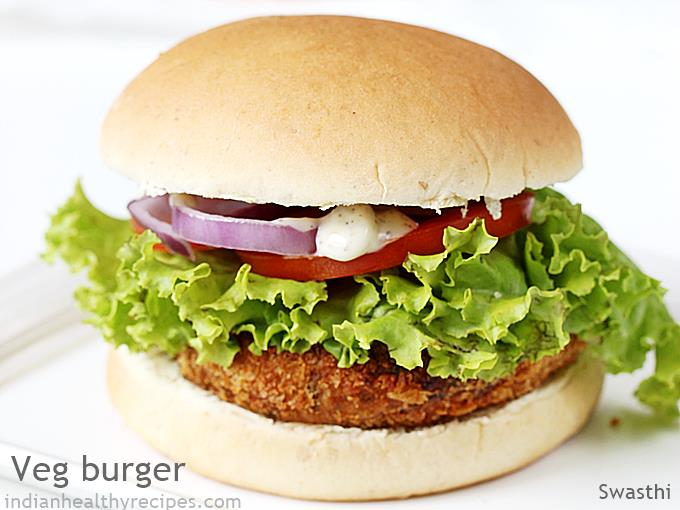

Veg-Burger Recipe

Description
This quick lunch or dinner consists of a vegetarian patty made from ingredients such as vegetables, grains, beans, or tofu, and is served on a bun along with various toppings and condiments
Ingredients
- Veggie patty - this can be made from various ingredients such as mashed beans, chickpeas, lentils, quinoa, tofu, mushrooms, or a combination of vegetables
- Buns - any type of burger buns can be used, such as whole wheat, sesame, or potato buns
- Lettuce - iceberg or romaine lettuce can be used as a base for the burger
- Tomato - sliced tomatoes are a common topping for veg burgers
- Onion - red or white onions can be sliced and added to the burger
- Avocado - sliced or mashed avocado adds a creamy texture and healthy fats
- Pickles - dill or bread and butter pickles add a tangy flavor
- Sauces - ketchup, mustard, mayonnaise, barbecue sauce, or hot sauce can be used to add flavor
- Cheese - if desired, vegan cheese or traditional cheese can be added to the burger
- Spices - various spices and herbs can be added to the veggie patty, such as cumin, chili powder, paprika, or basil, to add extra flavor
Steps
- Preheat a skillet or grill over medium heat
- Toast the burger bun lightly, cut-side down, on the skillet or grill until slightly crispy
- Cook the veggie patty according to the instructions on the package or recipe. If making your own patty, form it into a burger shape and cook on the skillet or grill until heated through and lightly browned on both sides
- Assemble the burger: place a leaf of lettuce on the bottom half of the bun, followed by a slice of tomato, onion, avocado, pickles, and any other desired toppings
- Add the cooked veggie patty on top of the toppings
- Add any desired sauce on top of the patty
- Place the top half of the bun on top of the burger
- Serve the veg burger immediately, and enjoy!